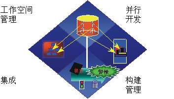

| 变更管理 |
 |
|
关系
| 相关元素 |
|---|
主要描述
|
 管理变更不仅仅是检入和检出文件。它包括工作空间、并行开发、集成和工作版本的管理。 开发软件密集型系统时的一个主要难题是您必须应对多个开发人员，将他们组织为（可能在不同地点）不同的团队，合作处理多个迭代、发行版、产品和平台。在缺乏有章可循的控制的情况下，开发流程很快陷入了混乱。 在 Rational Unified Process 中，配置与变更管理规程描述了您如何应对这一难题。 协调活动和工件协调开发人员和团队的活动和工件，这涉及到确立可重复过程来管理软件和其他开发工件的变更。这种协调允许基于项目的优先级和风险来更好地分配资源，并且它会积极管理多次迭代之间对这些变更的处理。 这种实践与开发软件迭代地配合使用，您就可以持续监视变更，从而可以积极地发现问题并做出响应。 关于该主题的更多信息，请参阅活动：管理变更请求。 协调迭代和发行版协调迭代和发行版涉及到在每次迭代完成时建立和发行经过测试的基线。保持每个发行版的各元素之间的可跟踪性以及多个并行发行版的各元素之间的可跟踪性，对于评估和积极管理变更的影响是必不可少的。 关于更多详细信息，请参阅活动：管理基线发行版。 控制软件的变更控制软件的变更，这就针对软件开发问题的根本原因提供了一些解决方案：
|
© Copyright IBM Corp. 1987, 2006. All Rights Reserved. |